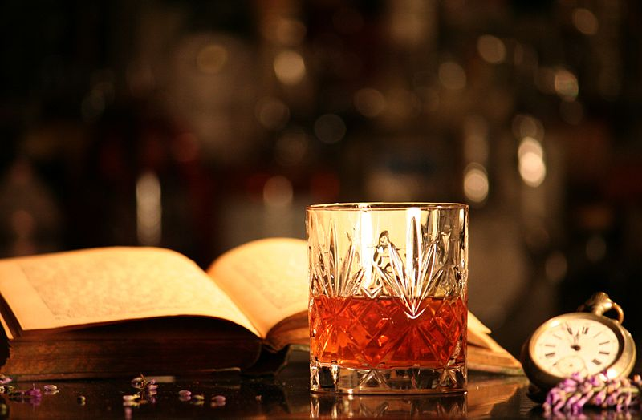

Sazerac Recipe

Description
Perhaps nothing is more famous among drinks aficionados than the Sazerac, a classic cocktail consisting of rye whiskey, absinthe, sugar and bitters. The exact birthdate of the cocktail is elusive, and purported to be anytime between the 1830s and the late-1800s.
- Barspoon Absinthe to rinse the glass
- 50ml Rye Whisky
- 10ml Sugar
- 3 dashes Peychaud's Bitters
- Lemon twist for garnish
- Fill a rock glass with chrushed ice and rinse it with absinthe
- In a mixing glass filled with cubed ice add whisky, sugar and bitters
- Stir all ingredients for about 30 seconds
- Discard crushed ice from absinthe rinsed rock glass
- Pour drink from mixing glass into rock glass
- Garnish with a lemon twist
Go back and get another drink mate!